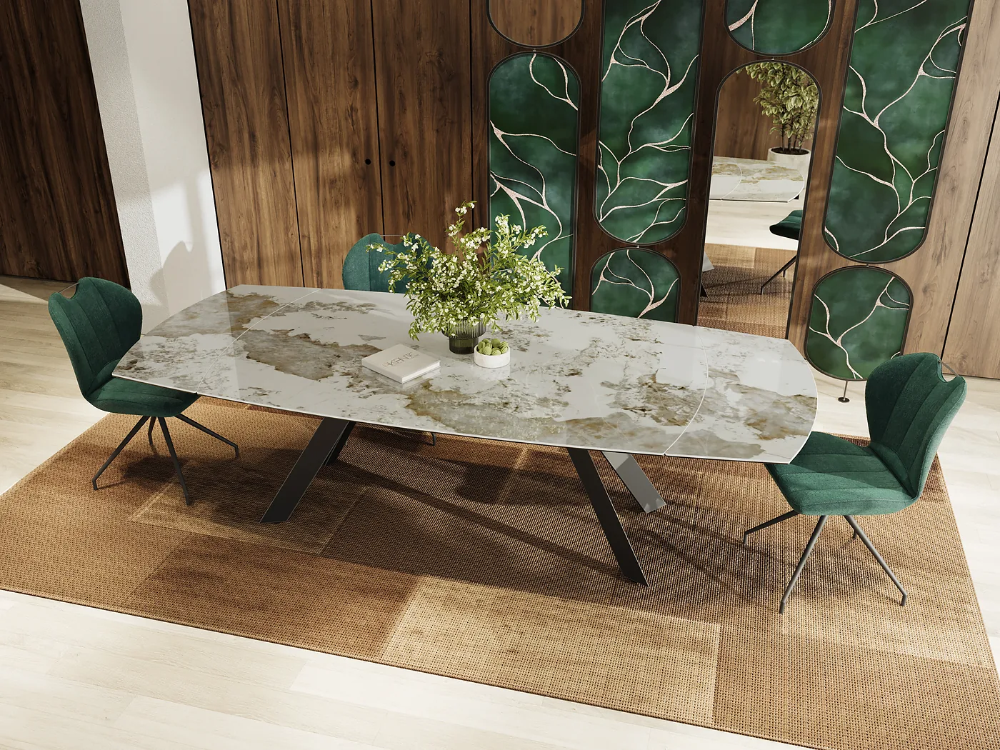
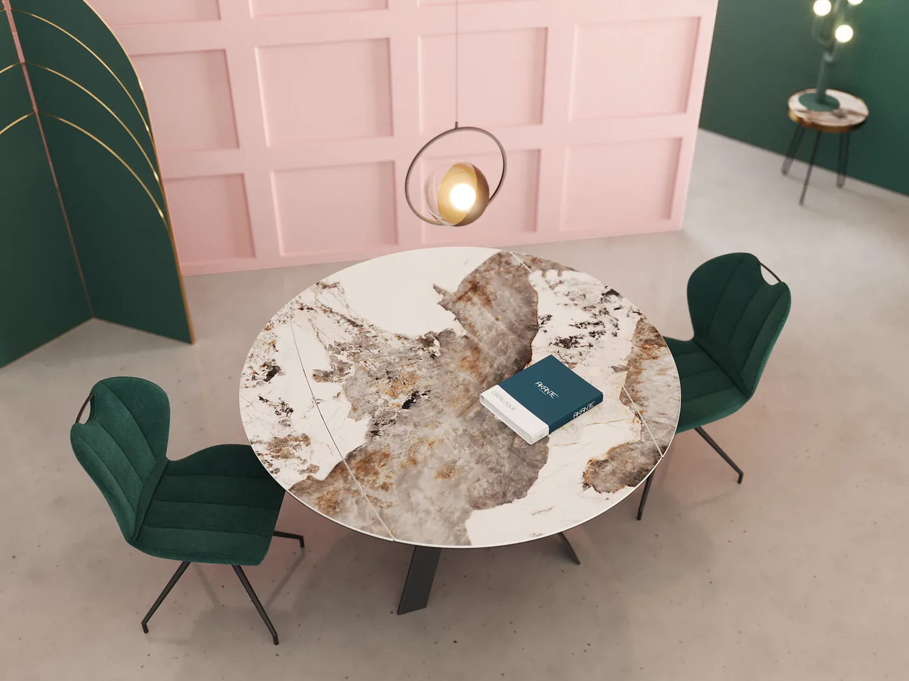

Salle à manger
Tables extensibles en céramique.
Comparez nos tables extensibles en céramique : dimensions fermées et ouvertes, mécanismes et finitions. Choisissez celle qui convient à vos repas quotidiens et à vos invités.
La sélection
Une table à rallonge pour chaque façon de recevoir.
-

Au quotidien comme pour recevoir
La rallonge intégrée au centre.
La table garde son format quotidien. Lorsque vous recevez, la rallonge centrale se déploie sans avoir à aller chercher un élément séparé.
-

Un seul geste
Deux rallonges, une ouverture synchronisée.
Les rallonges rangées sous le plateau s’ouvrent ensemble. Un format intéressant pour garder de la place au quotidien et recevoir davantage de convives.
-

Les grandes tablées
Jusqu’à douze autour de la table.
Ouvrez une rallonge indépendante ou les deux, selon le nombre de personnes à table. Les plus grands formats présentés atteignent trois mètres.
-

Une autre façon de recevoir
La table oblongue qui devient ronde.
Au quotidien, elle reste oblongue. Les rallonges complètent le cercle lorsque vous recevez : chacun se retrouve face aux autres, sans place en bout de table.


Vos questions
Avant de choisir.
Quelle longueur de table choisir ?
Partez de la table fermée, celle de tous les jours : de 120 à 200 cm selon le modèle. Ouverte, elle mesure de 180 à 300 cm, ou devient ronde pour le modèle Austin. Apportez les dimensions de votre pièce, nous vérifions avec vous.
Rallonge centrale ou rallonges latérales ?
La rallonge centrale se déploie au milieu du plateau ; les rallonges latérales sortent à chaque bout. Chaque fiche précise le mécanisme du modèle.
Combien de personnes autour d’une table ouverte ?
De 6 à 12 convives selon le modèle et la longueur. Le nombre de places est indiqué sur chaque fiche.
Venez voir nos tables au magasin.
Notre équipe vous aide à choisir les dimensions, le plateau et les finitions qui conviennent à votre pièce. Parking facile d’accès, avec ou sans rendez-vous.
- Lundi
- 13h30 – 18h30
- Mardi au samedi
- 10h30 – 18h30
- Dimanche
- Fermé
- Téléphone
- 064 46 07 72
- Livraison
- Par nos soins, dans le Hainaut (Binche, La Louvière, Mons, Charleroi…) et la province de Namur
Ailleurs en Belgique, dont Bruxelles : sur demande.